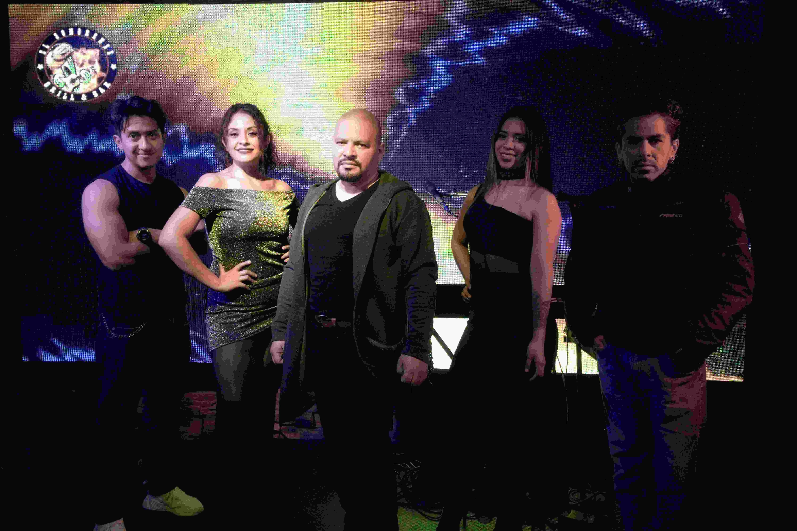

Muchos problemas musicales en bodas no se deben a fallas técnicas, sino a decisiones tomadas sin planeación. Este artículo identifica errores frecuentes y cómo evitarlos para garantizar que la música sea un componente positivo en tu día especial.
Errores de planeación
- No definir momentos musicales: Muchas parejas no identifican claramente cuáles son los momentos clave que requieren música específica, dejando todo a la improvisación.
- Cambios de último minuto: Modificar el programa o las canciones sin coordinar con los músicos o DJ puede generar desajustes significativos durante el evento.
Errores técnicos
- Espacio insuficiente: No considerar el área que necesita un grupo musical o equipo de sonido, resultando en instalaciones improvisadas que afectan la calidad del sonido.
- Falta de pruebas de sonido: Omitir este paso crucial puede resultar en problemas acústicos, especialmente en espacios abiertos o con características arquitectónicas particulares.
Errores de coordinación
- Desalineación con el cronograma: No sincronizar los tiempos musicales con otros elementos del evento como el servicio de catering o el protocolo de la recepción.
- Falta de comunicación con proveedores: No mantener informados a todos los involucrados sobre cambios en el programa o en la distribución de espacios.
Checklist preventivo
- ☐ Revisar logística con anticipación (espacio, electricidad, accesos)
- ☐ Confirmar horarios exactos con todos los proveedores
- ☐ Coordinar ensayos y pruebas de sonido
- ☐ Designar un coordinador que supervise aspectos musicales
- ☐ Tener plan de contingencia para problemas técnicos
Preguntas frecuentes
¿Se pueden corregir errores el mismo día?
Algunos sí, otros no. Problemas técnicos complejos o falta de equipamiento adecuado difícilmente pueden resolverse en el momento sin afectar el flujo del evento.
¿Quién debe coordinar los aspectos musicales?
Idealmente, un wedding planner o coordinador del evento que tenga comunicación directa tanto con los músicos como con los demás proveedores.
Evitar estos errores reduce riesgos y mejora la experiencia del evento. Una planeación musical clara, que anticipe necesidades técnicas y logísticas, permite que la música cumpla su rol de complementar cada momento sin convertirse en una fuente de preocupación.